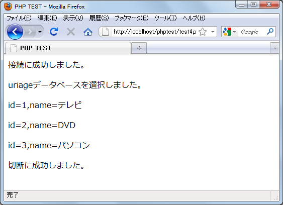

データの取得(SELECT)
ここからはデータベースへクエリーを発行する方法を見ていきます。クエリーを発行するには「mysql_query」関数を使います。
mysql_query resource mysql_query(string query [, resource link_identifier])
指定したクエリーを発行します。
引数：
query 発行するクエリーを記述したSQL。クエリ文字列は、セミコロン
で終えてはいけません。
link_identifier MySQLリンクID
返り値：
SELECT, SHOW, DESCRIBE や EXPLAIN 文では、mysql_query() は成功した
場合に resource を返します。エラー時には FALSE を返します。それ
以外の SQL 文 UPDATE, DELETE, DROP などでは、mysql_query() は成
功した場合に TRUE 、エラー時に FALSE を返します。
SQLで記述されたクエリーを発行します。注意事項としてSQL文の最後にセミコロン(;)は付けてはいけません。(SQLの記述方法については『MySQLの使い方』を参照して下さい)。
何らかの結果をデータベースから受け取るSELECTやSHOWなどのクエリーでは結果としてresource型の値を受け取ります。そのresource型の値から実際に帰ってきたデータを取得していきます。UPDATEやDELETEなどデータベースに対して処理を行う命令の場合は成功したかどうかを表すTRUEかFALSEの値を受け取ることになります。
実際の使い方としては下記のようになるかと思います。
$link = mysql_connect('localhost', 'user', 'pass');
if (!$link) {
die('接続失敗です。'.mysql_error());
}
$db_selected = mysql_select_db('database_name', $link);
if (!$db_selected){
die('データベース選択失敗です。'.mysql_error());
}
$result = mysql_query('SELECT * FROM xxxx');
if (!$result) {
die('クエリーが失敗しました。'.mysql_error());
}
mysql_close($link);
SELECT文の発行
クエリーの実際の例として、まずSELECT文の発行を試してみます。SELECT文はデータベースから条件にあう行に含まれる指定フィールドの値を取り出すものです。よって結果としては複数のフィールドに関する値が複数の行数分だけ帰ってくるはずです。
resource型の値から実際のデータを取り出すためには「mysql_fetch_assoc」関数を使います。
mysql_fetch_assoc array mysql_fetch_assoc(resource result)
クエリーを発行した結果として取得したリソース型の値の最初の行の値を
連想配列の形で取得します。この関数を実行した結果、行は1行進みます。
引数：
result クエリー発行の結果取得したリソース型の値
返り値：
現在の行に含まれる全てのフィールドの値をフィールド名と値を使った
連想配列の形で取得する。行がもうない場合には FALSE を返します。
クエリの結果には複数の行のデータがまとめて含まれています。クエリの結果に対する関数では、現在その結果の中のどの行について見ているのかのポイントがあり(最初は先頭の行を指しています)、関数を実行すると現在の行に対する処理が行われ、処理が終わればポインタは自動的に次の行に移ります。その為、関数を連続して実行することでクリエの結果に含まれる全ての行に対する処理が行えます。
「mysql_fetch_assoc」関数では、現在ポインタがある行の各フィールドの値を連想配列の形にして返してくれます。例えば「SELECT id, name from xxxx」のようなSELECT文を実行した場合には、下記のようにすることで現在の行のフィールドの値を取り出せます。
$result = mysql_query('SELECT id, name from xxxx');
$row = mysql_fetch_assoc($result);
print($row['id']);
print($row['name']);
クエリーの結果に含まれる全ての行のデータを取り出すには、下記のような感じで記述します。
$result = mysql_query('SELECT id, name from xxxx');
while ($row = mysql_fetch_assoc($result)) {
print($row['id']);
print($row['name']);
}
では実際に試してみます。データベース名「uriage」に含まれる「shouhin」テーブルからデータを取得してみます。
※MySQLの設定によっては文字化けをおこします。SELECT文などの結果を取得する前に「mysql_set_charset('utf8');」などを実行してMySQLのクライアント文字コードセットを設定して下さい。文字コードの関係については別のページで検証します。
<html>
<head>
<title>PHP TEST</title>
</head>
<body>
<?php
$link = mysql_connect('localhost', 'testuser', 'testuser');
if (!$link) {
die('接続失敗です。'.mysql_error());
}
print('<p>接続に成功しました。</p>');
$db_selected = mysql_select_db('uriage', $link);
if (!$db_selected){
die('データベース選択失敗です。'.mysql_error());
}
print('<p>uriageデータベースを選択しました。</p>');
mysql_set_charset('utf8');
$result = mysql_query('SELECT id,name FROM shouhin');
if (!$result) {
die('クエリーが失敗しました。'.mysql_error());
}
while ($row = mysql_fetch_assoc($result)) {
print('<p>');
print('id='.$row['id']);
print(',name='.$row['name']);
print('</p>');
}
$close_flag = mysql_close($link);
if ($close_flag){
print('<p>切断に成功しました。</p>');
}
?>
</body>
</html>
上記を「test4.php」としてローカル環境で稼動しているApacheのドキュメントルート以下に設置し、ブラウザでアクセスします。

テーブルに格納されているデータを取得することができました。
( Written by Tatsuo Ikura )

著者 / TATSUO IKURA
初心者～中級者の方を対象としたプログラミング方法や開発環境の構築の解説を行うサイトの運営を行っています。